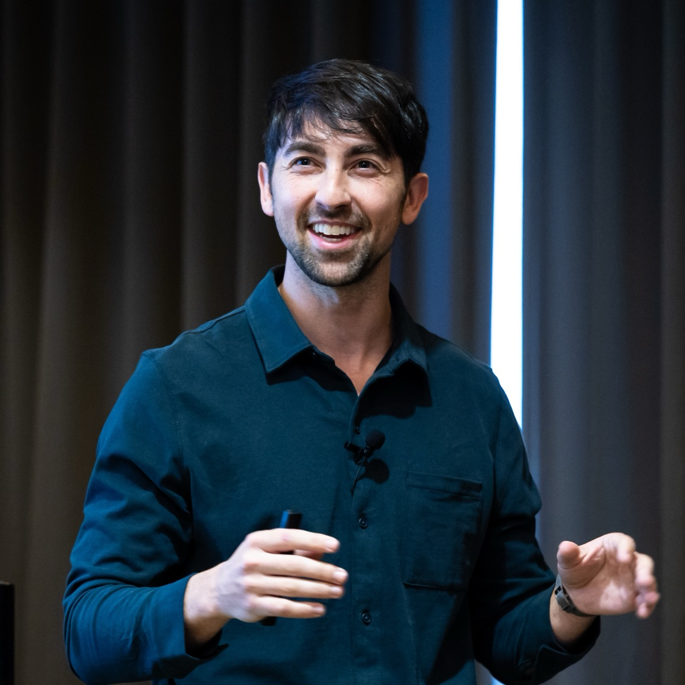

01Speaking
Speaking
Keynotes, panels, seminars, and podcasts on photonic computing, AI infrastructure, and quantum optics.
Featured2024 · Podcast

How to innovate at the speed of light
Listen on Apple Podcasts →
2026
AI Infra Summit
Feeding the AI factory: solving data movement, memory, and storage bottlenecks at scaleAI Infra Summit
Tech. Cars. Machines. (Ep. 63)
Why light beats electricity for moving data, and how Passage and Guide deliverSEMICON Taiwan
Foundational photonic building blocks empowering next generation AI infrastructureHot Interconnects
BiDi DWDM: the interconnect foundation for high-performance AI training and inferenceLightwave Broadband Pulse
Overcoming electrical bottlenecks for scaling AI with opticsEE Times AI With Sally
AI's next scaling challenge is interconnect, not computeThis Week in AI
Copper vs. fiber: why AI data centers are hitting a wallOFC 2026 Optica Executive Forum
Bloomberg Tech Disruptors
Lightmatter taps photonics to solve AI at scaleSPIE Photonics West
Photonic-enabled heterogeneous integration: the future of AI system scalingIndustry Strategy Symposium (ISS)
2025
Optica (Optical Society of America)
Scaling AI with light not copperGV Future of Compute
Next generation of compute leadersAIST Symposium
Photonic-enabled heterogeneous integration: the future of AI system scalingMizuho Virtual Fireside Chat
AI Infra Summit
Driving the next 1000X leap in computing with photonic AI infrastructureSEMICON Taiwan
Hot Chips
Transforming AI infrastructure with the power of 3D photonicsHot Interconnects
Transforming AI infrastructure with the power of 3D photonicsWeb Summit
How photonics meets AI's growing demands and reshapes datacenter infrastructureGoldman Sachs Private Company Conference
Lightmatter OFC Launch Event
Photonics Media / All Things Photonics
Spotlight on Passage product, supply chain partnerships, and roadmap for pluggable fibers
2024
MIT iQuISE Seminar
Compute cyborgs: how photonics will augment computersSequoia Capital AI Ascent
What's next for datacenters and powering the next generation of AI models
2023
Hot Interconnects
Lightmatter Passage technology and optical circuit switching fundamentalsThis Week in Startups (Ep. 1787)
Next Unicorns: Unlocking the power of photonic computing with Lightmatter CEO Nick HarrisCLEO
OFC Conference
Interconnect bottlenecks and the role of optics in AI clusters
2022
Hot Chips
Passage—A wafer-scale, programmable photonic communication substrateLDV Vision Summit
Accelerating artificial intelligence with lightMIT Seminar
Accelerating artificial intelligence with light
2021